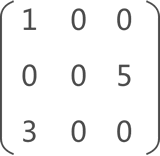
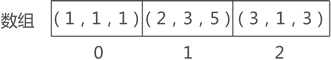
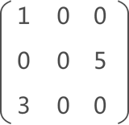
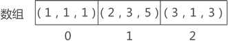

三元组顺序表，稀疏矩阵的三元组表示及（C语言）实现
本节介绍稀疏矩阵的三元组顺序表压缩存储方式。
通过《矩阵的压缩存储》一节我们知道，稀疏矩阵的压缩存储，至少需要存储以下信息：

图 1 稀疏矩阵示意图
例如，图 1 是一个稀疏矩阵，若对其进行压缩存储，矩阵中各非 0 元素的存储状态如图 2 所示：

图 2 稀疏矩阵的压缩存储示意图
图 2 的数组中，存储的是三元组（即由 3 部分数据组成的集合），组中数据分别表示（行标，列标，元素值）。
假设采用 TSMatrix 结构体存储图 1 中的稀疏矩阵，其 C 语言实现代码应该为：
通过《矩阵的压缩存储》一节我们知道，稀疏矩阵的压缩存储，至少需要存储以下信息：
- 矩阵中各非 0 元素的值，以及所在矩阵中的行标和列标；
- 矩阵的总行数和总列数；

图 1 稀疏矩阵示意图
例如，图 1 是一个稀疏矩阵，若对其进行压缩存储，矩阵中各非 0 元素的存储状态如图 2 所示：

图 2 稀疏矩阵的压缩存储示意图
图 2 的数组中，存储的是三元组（即由 3 部分数据组成的集合），组中数据分别表示（行标，列标，元素值）。
注意，这里矩阵的行标和列标都从 1 开始。
C 语言中，三元组需要用结构体实现，如下所示：
//三元组结构体
typedef struct {
int i,j;//行标i，列标j
int data;//元素值
}triple;
由于稀疏矩阵中非 0 元素有多个，因此需要建立 triple 数组存储各个元素的三元组。除此之外，考虑到还要存储矩阵的总行数和总列数，因此可以采用以下结构表示整个稀疏矩阵：
#define number 20
//矩阵的结构表示
typedef struct {
triple data[number];//存储该矩阵中所有非0元素的三元组
int n,m,num;//n和m分别记录矩阵的行数和列数，num记录矩阵中所有的非0元素的个数
}TSMatrix;
可以看到，TSMatrix 是一个结构体，其包含一个三元组数组，以及用于存储矩阵总行数、总列数和非 0 元素个数的变量。假设采用 TSMatrix 结构体存储图 1 中的稀疏矩阵，其 C 语言实现代码应该为：
#include<stdio.h>
#define number 3
typedef struct {
int i,j;
int data;
}triple;
typedef struct {
triple data[number];
int n,m,num;
}TSMatrix;
//输出存储的稀疏矩阵
void display(TSMatrix M);
int main() {
TSMatrix M;
M.m=3;
M.n=3;
M.num=3;
M.data[0].i=1;
M.data[0].j=1;
M.data[0].data=1;
M.data[1].i=2;
M.data[1].j=3;
M.data[1].data=5;
M.data[2].i=3;
M.data[2].j=1;
M.data[2].data=3;
display(M);
return 0;
}
void display(TSMatrix M){
for(int i=1;i<=M.n;i++){
for(int j=1;j<=M.m;j++){
int value =0;
for(int k=0;k<M.num;k++){
if(i == M.data[k].i && j == M.data[k].j){
printf("%d ",M.data[k].data);
value =1;
break;
}
}
if(value == 0)
printf("0 ");
}
printf("\n");
}
}
输出结果为：
1 0 0
0 0 5
3 0 0
关注公众号「站长严长生」，在手机上阅读所有教程，随时随地都能学习。内含一款搜索神器，免费下载全网书籍和视频。

微信扫码关注公众号